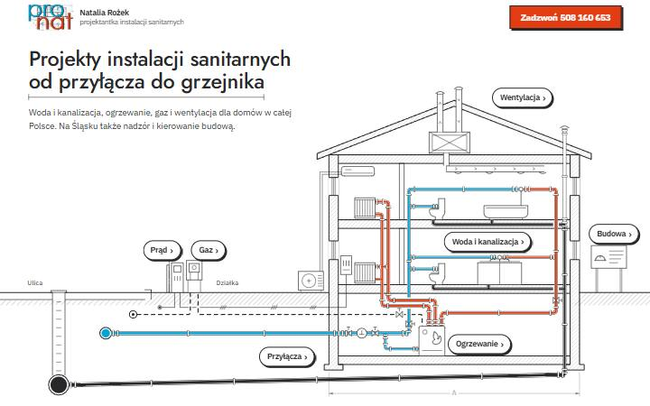
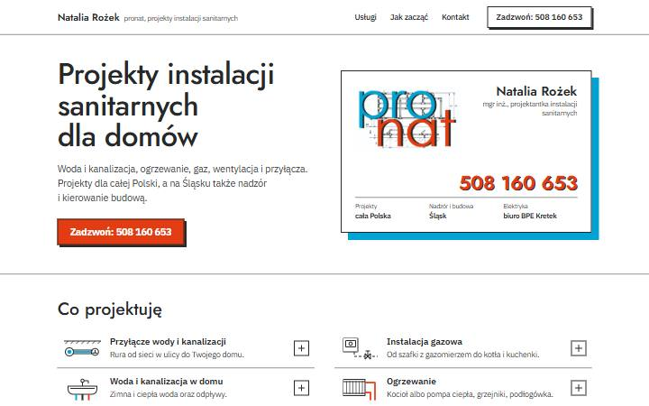
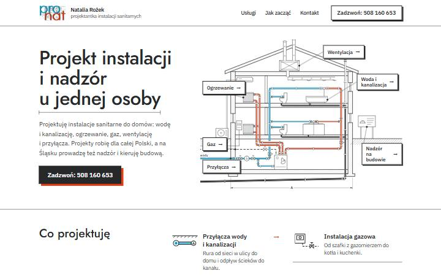

Trzy propozycje strony pronat
Każda wersja działa na komputerze i na telefonie. Otwórz każdą i poklikaj tak, jak zrobiłby to klient.

APrzekrój domu
Rysunek domu w przekroju jest menu: kliknięcie instalacji otwiera opis usługi. Sześć podstron, po jednej na usługę.
Zobacz wersję A →
BWizytówka
Prosta strona z wizytówką na początku i listą usług, która rozwija się po kliknięciu. Bez podstron.
Zobacz wersję B →
CArkusz z przekrojem
Strona jak arkusz projektu: rysunek domu z nazwami usług i przykładowa podstrona o przyłączach.
Zobacz wersję C →
To szkice. Teksty, rysunki i dane są do Twojego sprawdzenia, a strona nie jest jeszcze opublikowana pod adresem projektypronat.pl.
Najprościej odpisz literą: która wersja i co w niej zmienić.